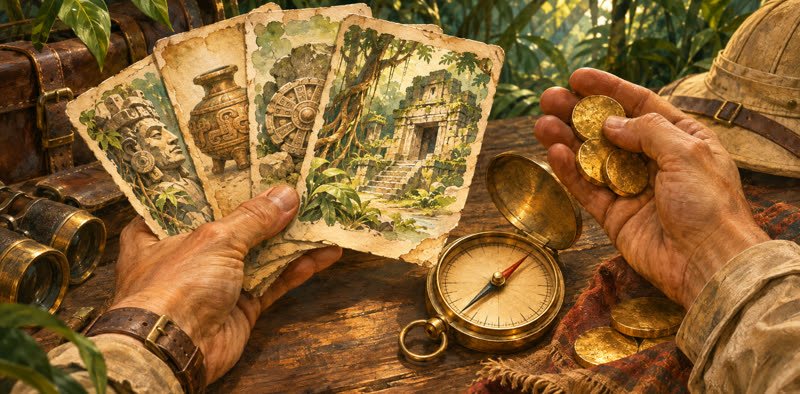
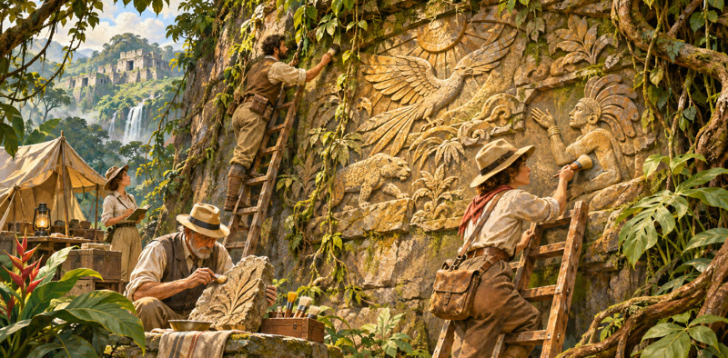
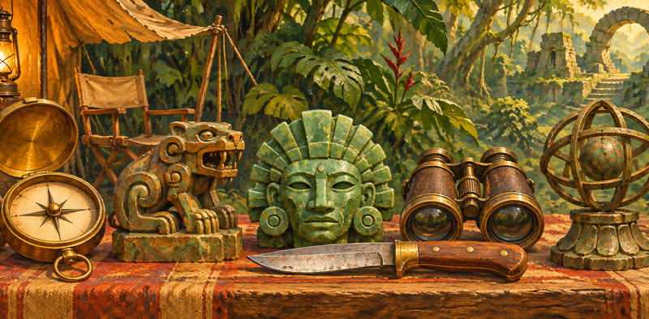
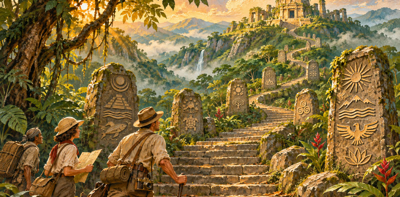

依据 CGE 官方规则书（简体中文版，一刻馆出版）用自己的话整理，有疑问以规则书为准。官方规则书可在 CGE 官网下载。
图文讲解16 节
01游戏概览
- 你带领一支探险队登上神秘的阿纳克岛：挖掘遗址、击败守卫、收集物品和神器，沿研究轨一路向上，寻找失落的神庙。
- 全局只有 5 轮。结束时把各项成就换成分数，分最高的人赢。1–4 人，另有单人规则。
- 玩法是「牌库构筑 + 工人放置」：每人从一样的起始牌库出发，买来的卡让牌库越来越强，考古学家则派到岛上各处行动。（基础规则书第 7 页）
02布置要点
- 主版图首局用鸟之神庙那一面；蛇之神庙那一面有几条特殊规则（第 19 页）。
- 牌列：神器、恐惧、物品各一堆。月之权杖放在第 I 轮的位置，左边翻 1 张神器，右边翻 5 张物品。
- 神像洗混随机放到遗址：一级遗址每处 1 个正面朝上；二级遗址每处 1 个正面、1 个背面。
- 封锁标记：4 人不用；3 人随机封 3 个行动格；2 人局和单人局 5 个全封，每处遗址只能放 1 个考古学家。
- 神庙板块每堆的块数等于人数；研究奖励板块按格子上的人数标记摆放。
- 每人拿玩家版图、2 个考古学家、放大镜和笔记本（放大镜叠在笔记本上，放在研究轨底部起点），2 张资金、2 张探索加 2 张恐惧洗成牌库，抽 5 张。
- 初始资源看行动顺序：第 1 位 2 金币，第 2 位 1 金币 1 指南针，第 3 位 2 金币 1 指南针，第 4 位 1 金币 2 指南针。
- 本站准备页的「看布置清单」会按你选的人数、扩展和研究轨列出全部步骤。（第 4–6 页）
03一轮怎么走
- 每轮四步：大家把手牌补到 5 张 → 从起始玩家开始顺时针轮流行动 → 每人都跳过后，本轮结束 → 轮末整理，月之权杖右移一格。
- 跳过的人本轮不能再行动，其他人照常轮流；只剩一个人没跳过时，他可以连着行动。
- 起始玩家标记每轮传给左边的人。第 V 轮结束后直接进入终局计分。（第 7、17 页）
04你的回合：主要行动和快速行动

- 每回合必须做恰好 1 个主要行动：挖掘一处遗址、发现一处新遗址、击败一名守卫、购买一张卡牌、打出一张卡牌、研究，或者跳过。
- 带闪电图标的是快速行动，不限次数，主要行动之前、之后甚至中间都能做：带闪电的卡牌效果、把神像放进神像槽、用守卫的奖励、用大多数助手。
- 一张手牌只能二选一：要么用它左上角的移动值，要么用它的效果。
- 用过的卡放在玩家版图旁的出牌区，要到轮末才洗回牌库。
- 不能只做快速行动不做主要行动；没有别的事可做时就选跳过。（第 8、23 页）
05移动费用与飞机
- 派考古学家去遗址要付移动费用，图标有四种：靴子、吉普车、船、飞机。
- 高级可以抵低级：飞机抵任何图标；吉普车和船都能抵靴子，但吉普车和船不能互抵。
- 随时可以花 2 金币换一架飞机来付费。
- 费用有两个图标时，可以用两个来源分别付；一张卡多出来的移动值本回合用不掉就浪费了，不会留到下回合。
- 恐惧卡没有效果，但左上角的靴子可以拿来付费。（第 8–9 页）
06挖掘与发现遗址

- 挖掘：派一个考古学家到遗址上空着的行动格，支付那一格的移动费用，然后结算遗址效果。两个考古学家都出去了，就不能再挖。
- 发现新遗址：先付该区域印在版图上的指南针费用，再付移动费用，把考古学家派过去；拿走那里的神像，立刻结算正面朝上那个神像的奖励（二级遗址两个都拿，只结算正面那个）；翻开一块遗址板块放上去并结算；最后翻一个守卫放在上面。
- 发现之后，这处遗址大家都可以来挖，按遗址板块上印的移动费用付。版图上的指南针费用只在发现时付。（第 9–10 页）
07守卫
- 每发现一处新遗址就会唤醒一个守卫。它不挡别人挖掘，但轮末从有守卫的遗址每收回一个考古学家，就要拿 1 张恐惧卡——不管守卫是不是你唤醒的。
- 击败守卫是主要行动：你得有考古学家在那处遗址上，支付守卫板块底部的费用，把守卫拿到自己版图旁。
- 击败后可以用它右上角的奖励一次（快速行动），用完翻面。不论用没用，终局每个守卫 5 分。
- 不必见一个打一个：有时省下资源去研究，得分更多。（第 11 页）
08神像与神像槽
- 发现遗址拿到的神像背面朝上放在资源箱里，终局每个 3 分。
- 快速行动：把一个神像放进最左边的空神像槽，从版图上的 5 种奖励里选一种，立刻获得。放进去就拿不出来，每个槽一局只能用一次。
- 放进槽的神像照样算 3 分；但空着的槽终局本身也有分（印在槽上），用不用要权衡。（第 11 页）
09买卡：物品与神器

- 月之权杖把牌列分成两半：左边神器，右边物品。权杖每轮右移，神器越来越多，物品越来越少。
- 买物品付金币，放到牌库底部，通常下一轮才抽到。
- 买神器付指南针，直接放进出牌区，可以立刻免费结算它的效果。以后从手牌打出神器，要付卡上角落的费用。
- 你的回合结束时补满牌列：同类卡朝月之权杖滑动，从外侧补新卡。
- 带红叉的效果是「移除」：把手牌或出牌区的一张卡移出游戏，恐惧卡则回到恐惧牌堆。常用来精简牌库，可以不用。（第 12–13 页）
10研究轨与失落的神庙

- 研究：把放大镜或笔记本沿连线向上移一层，支付两格之间「桥」上的费用。笔记本不能走到放大镜上面一层。
- 到达的格子上有研究奖励板块的，第一个到的人拿走并立刻获得。不管有没有拿到板块，那一层的效果（放大镜和笔记本各不相同）都要结算。
- 放大镜到达顶层就是发现了失落的神庙：越早到分越高，再从奖励堆里挑 1 块。笔记本进不了这一层。
- 之后再用放大镜研究，就改成购买神庙板块：11 分、6 分、2 分三种，每种要付不同的费用组合，拿完就没了。
- 终局两个研究标记都按所在那一层的分数计分。（第 14 页）
11助手
- 笔记本走到有助手图标的一层，从资源版图选一个助手，银色面朝上放到版图上；走到有升级图标的一层，把一个助手翻成金色面，并顺便重置它。
- 每个助手每轮能用一次，用过横放，轮末重置。玩家版图上有 2 个助手格。
- 用助手大多是快速行动；只有「打折买卡」的那位算主要行动。（第 15 页）
12跳过与轮末整理
- 不再行动时选跳过（它也是主要行动），跳过前先把还能用的快速行动用掉。
- 全员跳过后：收回考古学家，从有守卫的遗址每收回一个拿 1 张恐惧卡 → 剩下的手牌可以弃到出牌区，也可以留到下一轮 → 出牌区的牌洗混放到牌库底部 → 重置助手 → 移除月之权杖两侧的 2 张牌，权杖右移一格，补满牌列 → 起始玩家标记传给左边。
- 顺序很重要：先拿恐惧卡，再洗牌。除了轮末这一次，游戏中不洗牌。
- 第 V 轮只收回考古学家、拿恐惧卡，然后直接计分。（第 17 页）
13终局计分
- 研究标记：放大镜和笔记本各按所在层计分（失落的神庙按到达那一格的分数）。
- 神庙板块按面值；每个神像 3 分，再加上空神像槽印的分；每个守卫 5 分。
- 所有物品和神器卡，不管在牌库、手牌还是出牌区，都按右下角分数计分。
- 每张恐惧卡 −1；恐惧卡拿完后才会拿的恐惧板块，每块 −2。剩下的资源不计分。
- 同分时，先到达失落的神庙的赢；同分的人都没到，就比研究轨分数；还一样就并列。（第 18 页）
14单人模式
- 按 2 人局布置。另拿一块玩家版图的灰色帐篷面当对手，把不是你颜色的 6 个考古学家都给它，它只用一个放大镜。
- 对手行动牌堆：5 块考古学家板块，加 5 块红绿板块（每对选一块）；红色块数就是难度 0–5。
- 对手每轮都先手，每回合翻一块执行；翻完 10 块才跳过。它不拿资源，也不拿恐惧卡，但会计分。你后手，初始 1 金币 1 指南针。
- 对手的神像：每种第一个 3 分，重复的 2 分。比对手分高就赢。（第 20–21 页）
15探险队长扩展
- 每人选一位探险队长：专属版图、初始卡牌和能力，代替基础的玩家版图和基础卡（仍加 2 张恐惧卡）。
- 队长版图有蓝色神像槽，可以放特殊奖励；用队长时神像槽不必按顺序用。
- 六位从易到难：海军上校、驯鹰师、男爵夫人、教授、探险家、神秘人。新手建议从前几位开始。
- 新研究轨：猴之神庙、蜥蜴神庙，盖在主版图任一面上；设计者说配队长时用新神庙更平衡。
- 用队长时换上新版石钥匙神器和矿工助手。可选变体「红色月之权杖」：每轮移除离权杖最近的 2 张物品和 2 张神器。（《探险队长》规则书第 2–22 页）
16失踪的探险队与冒险模式
- 标准对战：加入新的物品、神器、守卫、神像和遗址，两条新研究轨（瀑布神庙、古树神庙），两位新队长（记者、机械师），以及两位只换初始卡组的简易队长（勘探家、旅行家）。
- 冒险模式：单人或双人合作，共 6 章，对抗一位虚拟对手。每章有自己的目标和 3 个成就，按冒险手册逐章布置；剧情在手册里，本站不收录。
- 章节分：胜利时，本方分数（双人相加再除以 2，保留半分）减去对手分数，可以是负数，负数也算赢；接受失败记 −10，下一章开局带惩罚。也可以把这章当没发生过，重玩。
- 6 章相加就是冒险总分（双人有半分时向上取整）。本站「本章」页帮你算分，并把每章结果存在房间里。（《失踪的探险队》规则书、冒险手册第 2–6、36 页）
常见问题40 条
官方没有单独的 FAQ 或勘误，以下依据各本规则书和设计者在 BGG 上的回答整理，点开查看答案。
回合与行动
「轮」和「回合」有什么区别？
全局共 5 轮。每一轮里，大家从起始玩家开始顺时针轮流进行回合，每个回合做 1 个主要行动，直到所有人都跳过，这一轮才结束。所以一轮里你通常会有好几个回合。 来源：基础规则书第 7 页
一个回合能做几件事？可以只做快速行动吗？
每回合必须做恰好 1 个主要行动，快速行动不限次数，可以在主要行动之前、之后或中间做。不能只做快速行动；没有别的主要行动可做时，必须选择跳过，跳过本身就是主要行动。 来源：基础规则书第 8、23 页
一张手牌能同时用移动值和效果吗？
不能，二选一：要么用左上角的移动值付费，要么打出它的效果。用掉的牌都放进出牌区。 来源：基础规则书第 8 页
卡牌上有好几个效果，要按什么顺序？必须全做吗？
按卡上印的顺序结算。有些效果是可选的，比如结实的靴子、海龟、鸵鸟这类卡，可以只用前半部分（例如抽牌），后面派考古学家的部分不做。 来源：设计者在 BGG 的回答
跳过之后还能做事吗？
跳过后本轮你不会再有回合，其他人继续轮流，轮到你时直接跳过你。跳过之前，同一回合里还可以先把快速行动用掉。 来源：基础规则书第 17 页
移动与费用
飞机怎么用？
任何时候都可以花 2 金币换一架飞机，飞机可以抵任何一个移动图标。击败守卫的费用里如果有移动图标，同样可以这样付。 来源：基础规则书第 9 页
吉普车能付船的费用吗？
不能。飞机抵一切；吉普车和船都能抵靴子，但吉普车和船之间不能互抵。 来源：基础规则书第 9 页
一张卡给的移动值多了，能留到下回合吗？
不能。多出来的会浪费。不过一张卡的移动值可以同时付两处费用，例如一部分付助手的快速行动、一部分付挖掘。 来源：基础规则书第 9、15 页
遗址与守卫
挖掘已发现的遗址要付多少？
付遗址板块上那个行动格印的移动费用。版图上印的指南针费用只在发现这处遗址时付一次。 来源：基础规则书第 10 页
二级遗址有两个神像，两个都结算吗？
两个神像都拿走，但只结算正面朝上那个的奖励；另一个直接背面朝上放进资源箱。 来源：基础规则书第 10 页
守卫什么时候让我拿恐惧卡？
只在轮末收回考古学家时：每从一处还有守卫的遗址收回一个考古学家，拿 1 张恐惧卡放进出牌区。守卫是不是你唤醒的都一样。 来源：基础规则书第 10、17 页
守卫的奖励能用几次？
整局只能用一次，用完把守卫翻面。不管用没用，终局每个守卫都算 5 分。 来源：基础规则书第 11 页
守卫板块上那个打勾的图标是免费击败的意思吗？
不是。击败守卫要付板块底部的费用。早期印刷的守卫板块上多印了一个提示图标，容易误解，新印刷版已经去掉。 来源：设计者在 BGG 的回答
神像
神像放进神像槽后还算分吗？
算，每个神像 3 分，放不放进槽都一样。另外，终局还空着的神像槽，按槽上印的分数加分。 来源：基础规则书第 11、18 页
神像槽的奖励可以先存着以后用吗？
不能。把神像放进槽时就从 5 种奖励里选一种立刻获得。研究奖励板块也是到达时立刻获得。 来源：基础规则书第 11、14 页
卡牌
买的物品什么时候能用？
买的物品放到牌库底部，轮末洗回的牌会放在它下面，所以一般下一轮就会抽到。如果本轮有抽牌效果把它抽上来，也可以当轮使用。 来源：基础规则书第 12、23 页
神器买来要付石板吗？
买神器只付指南针，并且可以立刻免费结算效果，不用付角落的费用。以后从手牌打出这张神器时，才要付角落的费用。 来源：基础规则书第 12–13 页
牌列什么时候补？
在你的回合结束时补。同类卡朝月之权杖滑动，再从外侧补一张新的。设计者确认这是本意。 来源：设计者在 BGG 的回答
移除效果必须用吗？
可以不用。移除时把手牌或出牌区的一张卡移出游戏，恐惧卡则回到恐惧牌堆。先打出再从出牌区移除，比直接移除手牌更划算。 来源：设计者在 BGG 的回答
手牌能超过 5 张吗？能自己洗牌库吗？
手牌可以超过 5 张，5 张只限制每轮开始的补牌。牌库只在开局洗一次，之后只有轮末把出牌区的牌洗混放到牌库底，平时不能洗。牌库抽空了就不能再抽。 来源：基础规则书第 23 页
研究与助手
研究时拿到奖励板块，那一层的效果还结算吗？
结算。每层的效果每次到达都要结算，奖励板块只给第一个到的人。你可以选择先结算层效果再用奖励板块。 来源：基础规则书第 14、23 页
笔记本能超过放大镜吗？
不能，笔记本最多和放大镜在同一层。笔记本也进不了失落的神庙那一层。（《失踪的探险队》的记者例外，笔记本可以高一层。） 来源：基础规则书第 14 页
到了失落的神庙之后研究还能做什么？
再用放大镜研究时，改为付费买一块神庙板块：11 分、6 分、2 分三种，各要付不同的费用组合，每堆拿完就没了。 来源：基础规则书第 14 页
助手一轮能用几次？升级后呢？
每个助手每轮用一次，用过横放，轮末重置。升级到金色面时会顺便重置，所以刚用过的助手升级后可以再用一次。 来源：基础规则书第 15 页
轮末与计分
轮末先洗牌还是先拿恐惧卡？
先收回考古学家、拿恐惧卡，再把出牌区连同新拿的恐惧卡一起洗混放到牌库底。 来源：基础规则书第 17、23 页
牌库里没抽到的卡也计分吗？
计分。终局你拥有的所有物品和神器卡都算，不管在牌库、手牌还是出牌区；恐惧卡同样不管在哪里都每张 −1。 来源：基础规则书第 18 页
同分怎么判胜负？
先到达失落的神庙的人赢；同分的人都没到达，就比研究轨分数高低；还一样就共享胜利。 来源：基础规则书第 18 页
恐惧卡拿完了怎么办？
改拿恐惧板块（×3 板块的背面），放进出牌区，终局每块 −2。可以用移除效果把它移除。这种情况很少见。 来源：基础规则书第 23 页
单人模式
单人对手怎么计分？
对手按放大镜位置、神庙板块、守卫、买到的卡计分。神像每种第一个 3 分，重复的（放在 −1 格的）每个 2 分。对手不拿恐惧卡。 来源：基础规则书第 21 页
单人难度怎么调？
对手行动牌堆由 5 块考古学家板块和 5 块红绿板块组成，红色那块更凶。用几块红色，难度就是几（0–5）。 来源：基础规则书第 20 页
探险队长
用队长时神像槽要按顺序用吗？
不用。用队长时可以先用蓝色神像槽；普通的 5 种奖励在任何槽（包括蓝色槽）都能选，蓝色槽的特殊奖励只有放进蓝色槽才能用。 来源：《探险队长》规则书第 5 页
神秘人的恐惧卡怎么算分？
神秘人移除的恐惧卡进入祭典牌堆，终局不扣分，还可以花 2、3、4 张举行祭典。举行祭典算主要行动。 来源：《探险队长》规则书第 16 页
探险家用零食标记离开有守卫的遗址，要拿恐惧卡吗？
不用。用零食标记把考古学家再派出去时，零食标记留在离开的遗址上，你之后不能回到那里。零食标记轮末回到版图。 来源：《探险队长》规则书第 14 页
驯鹰师的猎鹰到了鹰轨最后一格，还会继续前进吗？
不会。猎鹰已经在最后一格时，再前进没有效果，它就停在那里。猎鹰不会每轮自动飞回，只有你使用它当前格或之前任一格的效果时，才回到起点。 来源：《探险队长》规则书第 8 页
失踪的探险队
冒险模式的章节分怎么算？
胜利时，本方分数（双人相加除以 2，保留半分）减去对手分数，可以是负数，负数也算胜利。接受失败记 −10。6 章相加是冒险总分，双人有半分时向上取整。 来源：冒险手册第 5、36 页
冒险模式输了一定要接受失败吗？
不用。可以当这章没发生过直接重玩，重玩前赢得的东西不算。接受失败会读替代结局，并在下一章开局带惩罚。 来源：冒险手册第 4、6 页
易混卡牌
瑞士军刀能选同一种好处两次吗？
不能，必须从四种里选两种不同的。 来源：基础规则书第 22 页
鱼竿、精密指南针买不起任何卡也能用吗？
能。翻开对应牌堆顶的一张，它也算可买的卡之一；可以都不买，把它翻回去。 来源：基础规则书第 22 页
守卫的陶笛和结实的靴子之类的折扣能一起用吗？
能。设计者确认陶笛会把你所有的移动图标变成飞机，包括靴子、海龟、鸵鸟这类卡给的折扣。 来源：设计者在 BGG 的回答
探路者的凉鞋、探路者的手杖的「迁移」要付移动费用吗？
不用。迁移是把已在遗址上的考古学家移到另一处已发现遗址的空位，不付移动费用；和派考古学家「挖掘、发现」是两回事。 来源：基础规则书第 22–23 页